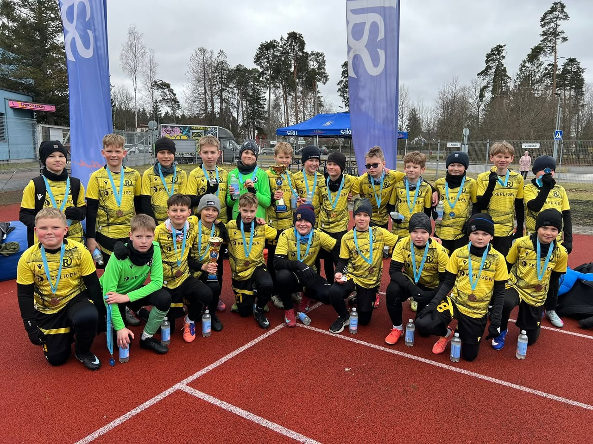

Treeningud ja võistkonnad vastavalt vanusele ja tasemele.
FC Rae noored
Too laps jalgpalli. Klubi kasvab koos lastega.
FC Rae noortetöö eesmärk on pakkuda Rae valla lastele head, turvalist ja arendavat jalgpallikeskkonda. Laps õpib liikuma, mängima, kuuluma võistkonda ja tundma rõõmu ühise pingutuse üle.
Alusta siit
Registreerimine käib ARNO kaudu.
Kui laps tahab jalgpallitrenni tulla, on esimene samm ametlik registreerimine Rae Spordikooli süsteemis. Küsimuste korral kirjuta klubile ja aitame õige grupi või treeningkoha leidmisega.
Grupid
Lastele ja noortele erinevates vanustes.
Tüdrukute jalgpalli arendamine on FC Rae kasvus oluline suund.
Esimene samm jalgpalli juurde mänguliselt ja turvaliselt.

Lapsevanemale
Mida enne esimest trenni teada?
Kui laps ei ole kindel, kirjuta meile. Aitame leida sobiva grupi ja võimaluse esimeseks prooviks.
Kaasa sportlik riietus, joogipudel ja väljakule sobivad jalanõud. Täpsem info sõltub treeningkohast.
Kui laps on juba mõnes klubis, tasub enne liitumist küsida üle EJL-i ja treenerite poolsed sammud.
Treeningpiirkonnad
Jalgpall võimalikult kodu lähedal.
FC Rae eesmärk on kasvatada jalgpalli üle Rae valla. Täpne treeningkoht ja aeg sõltub lapse vanusest, grupist ja hooajast.
Jüri
Järveküla
Peetri
KKK
Korduma kippuvad küsimused.
Millises vanuses saab alustada?
Üldjuhul sobib alustamiseks 6+ vanus. Nooremate laste puhul sõltub kõik grupist, treeningkohast ja lapse valmisolekust.
Kas laps võib tulla proovitrenni?
Jah, kirjuta enne klubile või treenerile, et leida õige grupp ja sobiv aeg.
Kuidas toimub registreerimine?
Registreerimine toimub Rae Spordikooli ARNO süsteemi kaudu. Link on sellel lehel ja avalehe nuppudes.
Mis vahe on huviringil ja võistkonnal?
Alguses on fookus liikumisel, mängurõõmul ja põhioskustel. Vanuse ja taseme kasvades lisanduvad võistkondlikud mängud ning EJL-i sarjad.
Kelle poole pöörduda?
Kirjuta aadressile info@fcrae.ee ja suuname sind õige treeneri või grupi juurde.